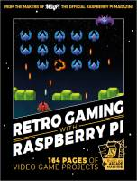
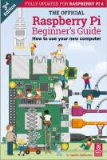
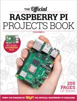
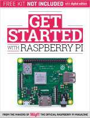
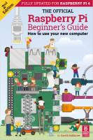
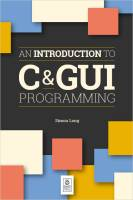
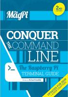

Retro Gaming with Raspberry Pi
Número 1 - 2019 noviembre
Descarga (PDF 46.4 MB, inglés)

Raspberry Pi Beginner’s Guide 3º ed.
Número 3 - 2019 noviembre
Descarga (PDF 24.0 MB, inglés)

Rapsberry Pi Projects Book
Número 5 - 2019 noviembre
Descarga (PDF 57.8 MB, inglés)

Get Started with Raspberry Pi
Número 1 - 2019 noviembre
Descarga (PDF 33.7 MB, inglés)

Raspberry Py Beginners Book
2º ed. - 2019 julio
Descarga (PDF 37.2 MB, inglés)

C and GUI Programming
2019 abril
Descarga (PDF 9.0 MB, inglés)

Conquer the command line
Número 2 - 2019 febrero
Descarga (PDF 9.0 MB, inglés)